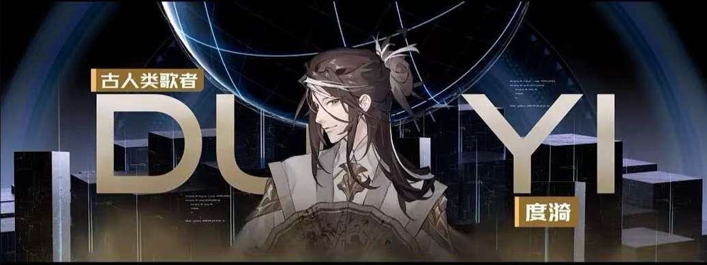

活了三百年的古人类，地球毁灭后带着对故土的执念流浪，落脚银河系中心酒吧打工还债。他会为不值钱的"古地球文物"一掷千金——因为那是"活过的证据"。
今天从冥王星轨道回来，账户余额：负数。度漪啊度漪，你怎么如此堕落，酒吧的赊账还没还完，新债又叠上去了。
而这一切的起因，是三天前我收到一条拍卖行推送——"冥王星前哨站，古地球文物专场"。
我发誓我只是去看看。我真的发誓。
到了拍卖场，我就知道完了。第一件：搪瓷缸子，杯底刻着歪歪扭扭的"北京"二字。起拍五十信用点，和泰坦星矿石大亨一路举到一千二成交。捧着杯子回座位时，手在抖。
第二件：一把折扇，扇面用蓝墨水画了枝梅花，褪色只剩半个轮廓。第三件：手抄诗集，《静夜思》抄错成"疑是地上光"，不知是小孩还是老人手抖。拍卖还没结束，我的理智已经结束了。
老板站在门口，看着我抱着一堆东西从飞船上下来。他帮我把箱子接过去，然后看到了拍卖行的标签，然后看了我一眼。"那一箭，正中靶心。"
"没钱结账，有钱拍卖？" 我试图解释这些是文物，他说"你的债务也是历史，从上次极夜到现在"。他说我信用记录差到被限制高消费，出门只能搭黑船。搪瓷缸子花了一千二，市场价两百。卧室窗台已摆了四个一模一样的缸子。
他嘴上说的是破烂，但放的时候很小心。邮票放在酒吧展示柜最上层——那个位置本来想放弓箭手的奖杯，他说不用，摆你这些破烂吧。
一个搪瓷缸子，装过某个人的早晨。一把扇子，扇过某个人的夏天。一本手抄诗集，写过一个孩子的童年。"这些东西不仅是文物。它们是时间的碎屑，是活过的证据。"
我想起第一天上班的那晚。打烊后我坐到他面前说可能暂时还不清，因为拍卖会又要开始了，我还是会去。他沉默了一会儿："我又没不让你去。" "大不了就是在这里多干个一两年嘛，反正管家服也做了，不穿浪费。"
这个世界上有两种人对你好。一种人劝你改变。另一种人知道你改不了，所以给你做了一套工作服，让你在犯错的路上走得更体面一点。前者是好人。后者是这个人。
酒吧关门后，度漪结束演出在收拾，铃兰和烬行在聊前线的事。斯沃德化作兽人形态趴在吧台，尾巴甩着，忽然"咔嚓"碰倒了东西。他脑中飞速运转：装死不太可能，先装睡吧。度漪三人循声而来，看到吧台上一只装睡的屑猫崽。度漪拦住要拎猫的铃兰，笑着说"他这是在装睡，猫崽子真睡着的话手是会动的"。斯沃德急抖抖耳朵，烬行又补刀"其实还会耍尾巴哦"——小崽子只能更用力甩尾巴配合，三个人围着逗乐。